Misericordia di AricciaConfraternita di Misericordia di Ariccia ODV
Ragazzi · 12-14 anni
I segnali di sicurezza che salvano la vita
12-14 anni⚠️ Standard internazionale ISO 7010: imparali a riconoscere. Si usano in Italia, in Europa e in molti altri Paesi: ti aiutano a capire dov'è un pericolo e dove sono l'uscita e i soccorsi.
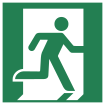
USCITA DI EMERGENZA
E002 (verde)

PUNTO DI RACCOLTA
E007 (verde)
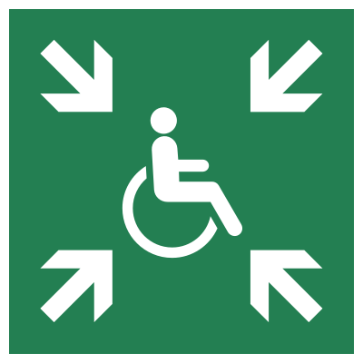
RIFUGIO TEMPORANEO
E024 (verde)
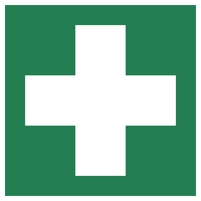
PRIMO SOCCORSO
E003 (verde)
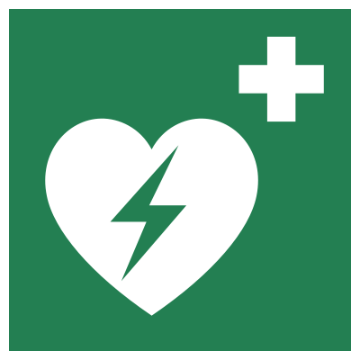
DEFIBRILLATORE
E010 (verde)
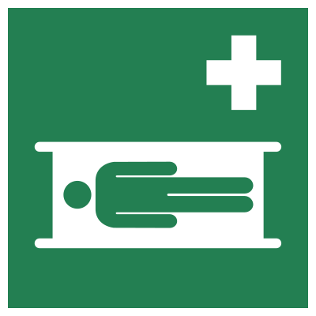
BARELLA
E013 (verde)
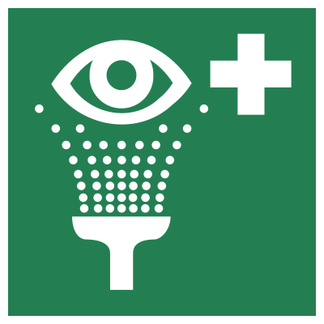
LAVAGGIO OCCHI
E011 (verde)
MEDICO
E009 (verde)
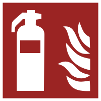
ESTINTORE
F001 (rosso)
NASPO ANTINCENDIO
F002 (rosso)
ALLARME ANTINCENDIO
F005 (rosso)
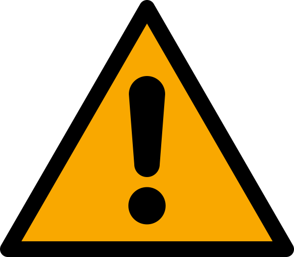
PERICOLO GENERICO
W001 (giallo)
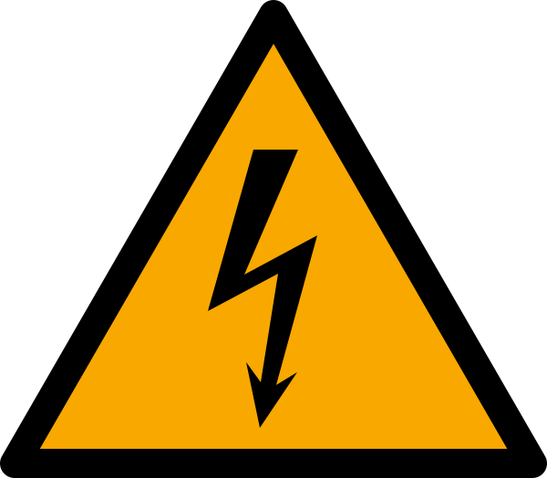
PERICOLO ELETTRICO
W012 (giallo)
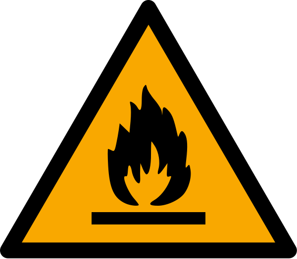
MATERIALE INFIAMMABILE
W021 (giallo)
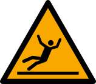
PAVIMENTO SCIVOLOSO
W011 (giallo)
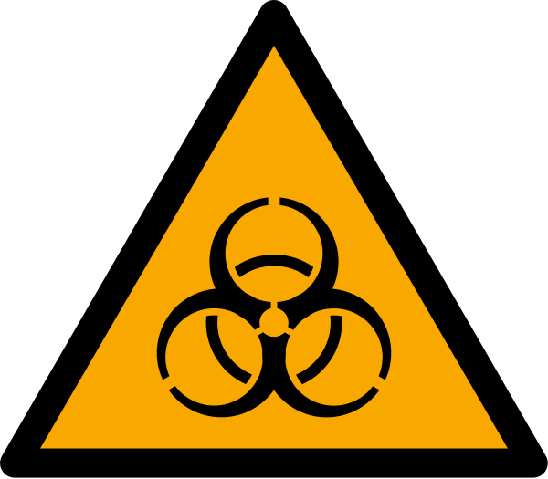
RISCHIO BIOLOGICO
W009 (giallo)
CASCO OBBLIGATORIO
M014 (blu)
OCCHIALI OBBLIGATORI
M004 (blu)
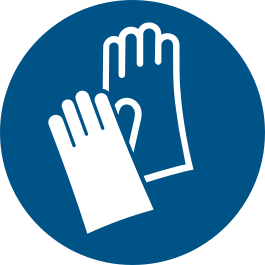
GUANTI OBBLIGATORI
M009 (blu)
VISIERA OBBLIGATORIA
M013 (blu)